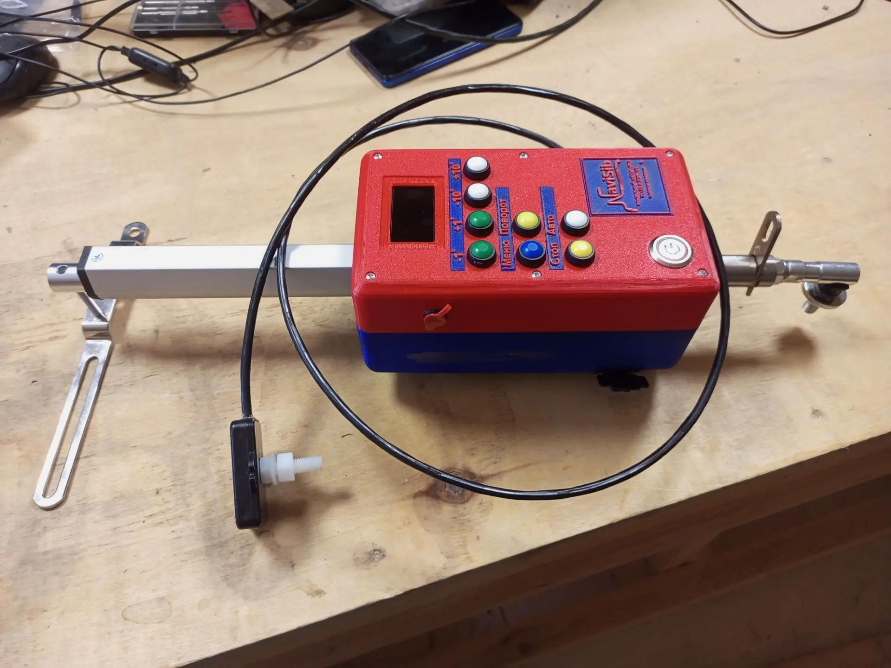
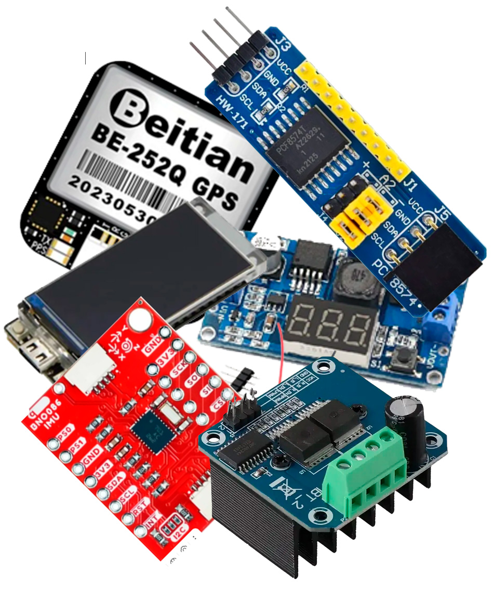
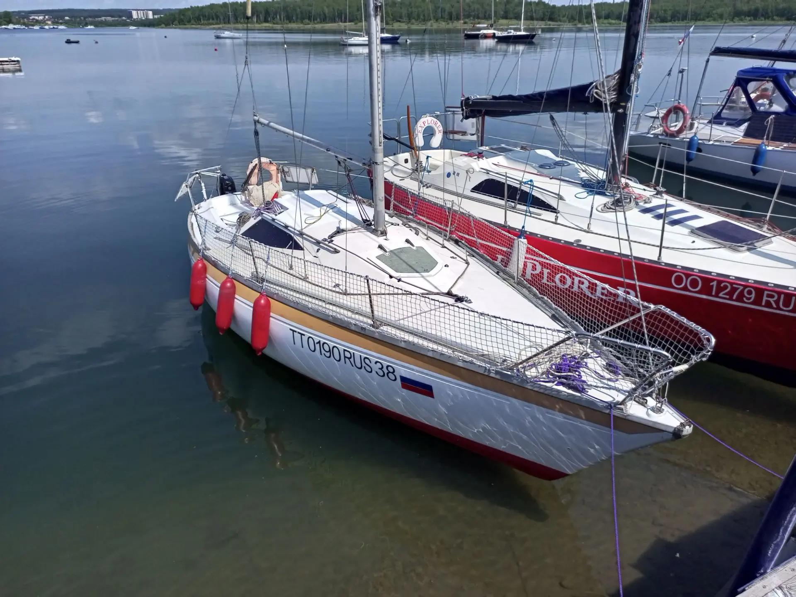
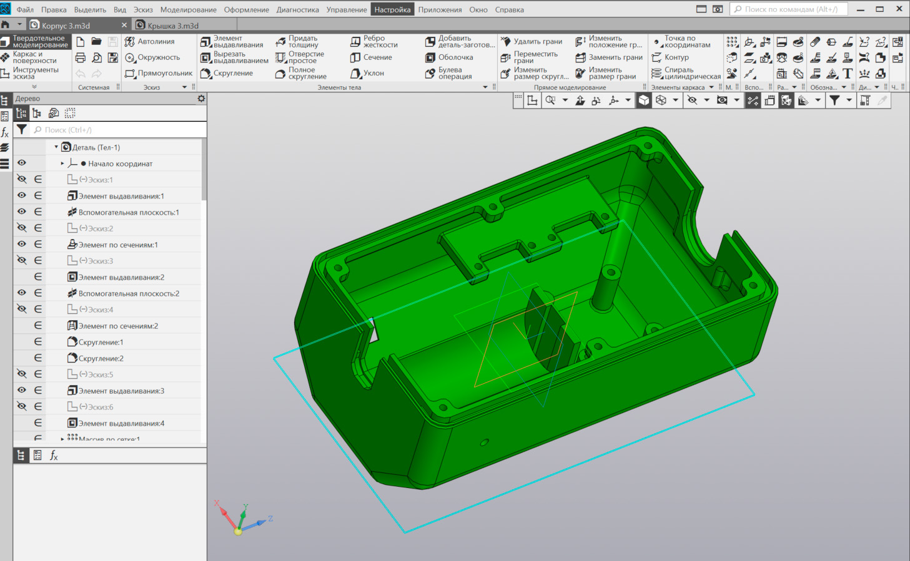
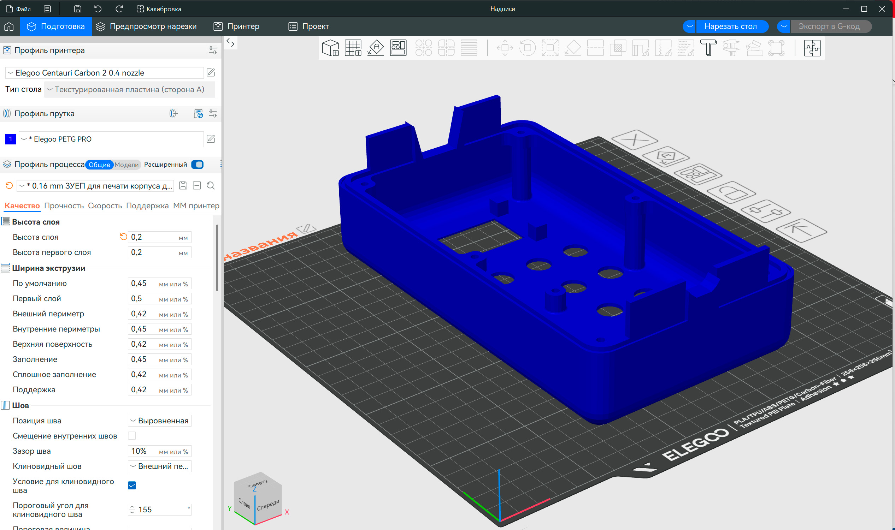

NaviSib в деталях
Комплекс NaviSib в деталях: от интерфейса мобильного приложения до ходовых испытаний на воде.

Промышленный образец румпельного автопилота

Румпельный автопилот в рабочем положении NaviSib

Яхта "Hakuna Matana" для ходовых испытаний Navisib на воде

Готова первая партия автопилотов NaviSib для ходовых испытаний в навигацию 2027 г!

3D модель корпуса автопилота NaviSib
